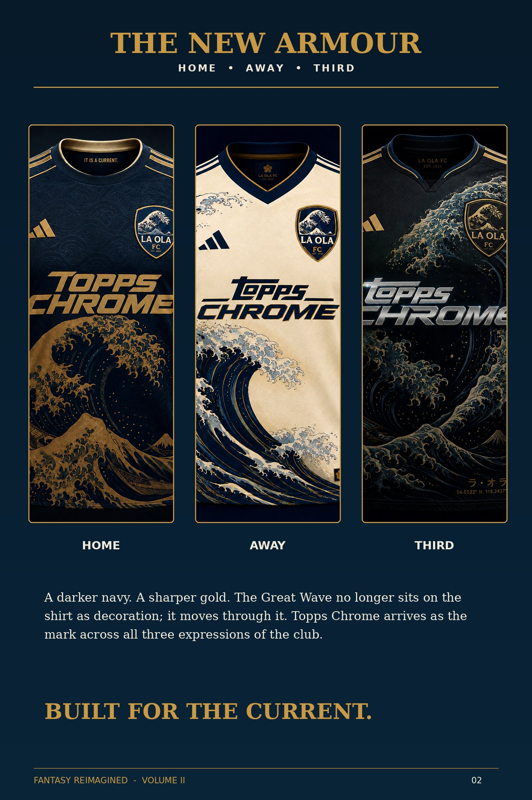
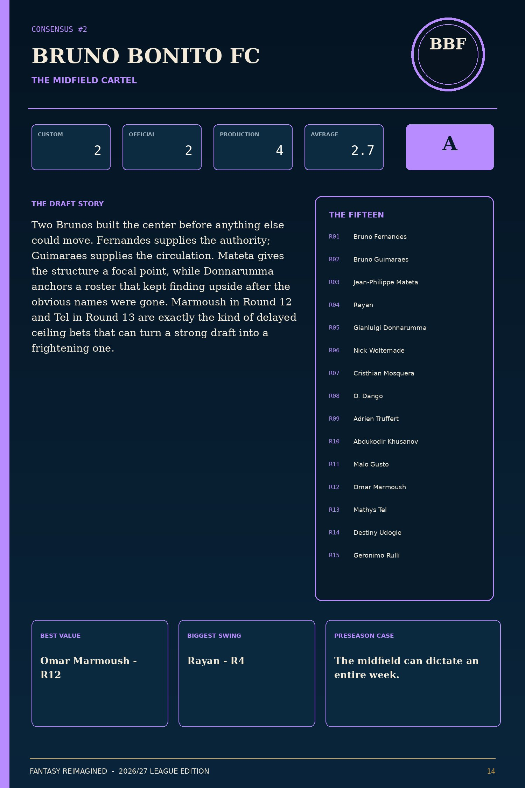
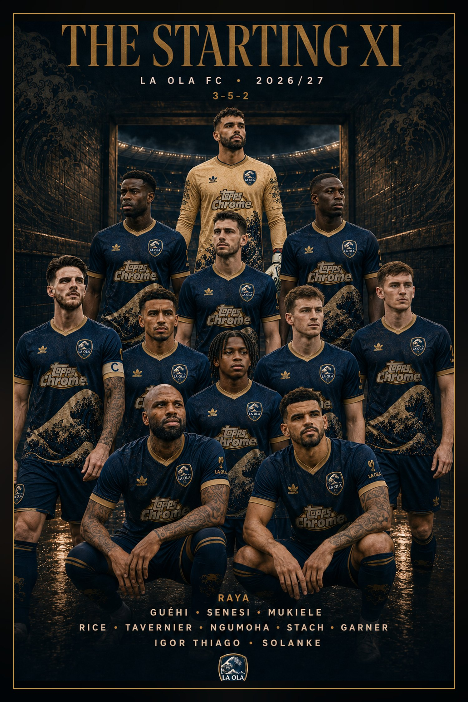
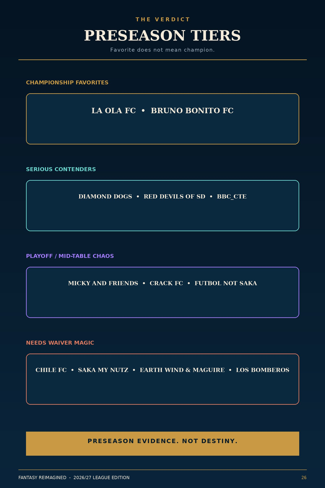
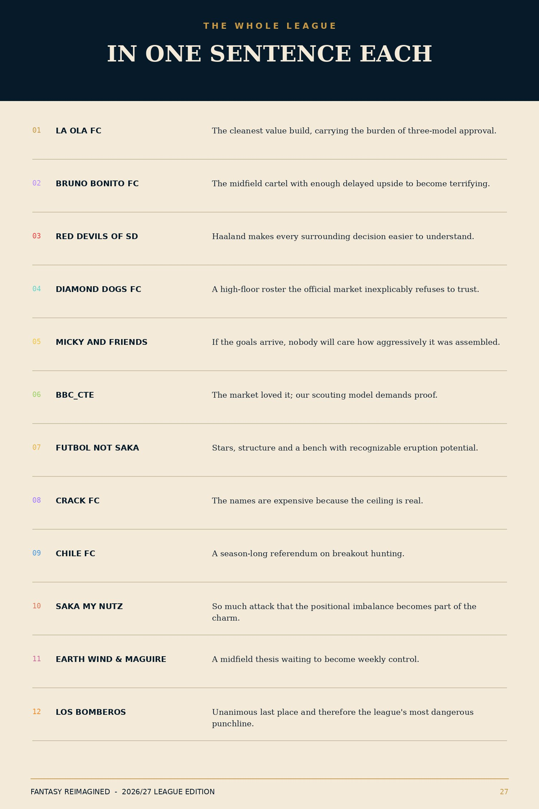

FIRST TEAM · FEATURE
The Opening Three
Thiago. Rice. Guéhi. The 2026 draft core and the campaign that announces the club’s return.
Read story →LA OLA FC · 2026/27 SEASON
After a third-place finish and a season spent mostly silent, La Ola FC returns with a cleaner crest, a darker kit, and the same refusal to explain itself.
LATEST FROM THE CLUB
La Ola FC is the front door. Current club stories lead; Fantasy Reimagined sits behind them as the complete season publication.
FIRST TEAM · FEATURE
Thiago. Rice. Guéhi. The 2026 draft core and the campaign that announces the club’s return.
Read story →

CLUB DOSSIER
Consensus 01. Grade A+. The deepest preseason roster still has to become the first La Ola champion.
Club profile →FIRST TEAM
The football assets are the site: starting XI, club dossier, kits and campaign work become real team modules instead of decorative archive cards.

FANTASY REIMAGINED · 2026/27
The complete 27-page issue stays intact as the authoritative preseason publication, but it lives inside the club site rather than being the club site.

ISSUE 01
Three models examine all 180 picks before reality gets a vote.
Read issue →
LEAGUE INTELLIGENCE
Predictions, not facts. Every club enters the preseason machine.
Open forecast →
PRESEASON BOARD
Evidence is not destiny. Every club begins with a path up.
View board →LEAGUE WORLD
The wider FPL league is the competition surrounding La Ola FC. Club dossiers, rankings and stories belong here without replacing the club as the homepage identity.
CLUB ARCHIVE
2025/26 remains club history through the preserved studies and campaign work. The older 28-page 2026/27 export stays labeled as evolution, not the current season guide.

2025/26 · STUDY
The first public club-world statement from the previous season.

2025/26 · MATCHWEEK
Preserved campaign work from the club’s first visual season.
2026/27 · EVOLUTION